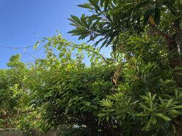

うるがいの話 ある日
最新: 洗濯乾燥機のドアがおかしい【うるがいの話 ある日】とは 一日だけのプログです
『うるがいの話』の最新一日だけのプログで、通信料が少なく経済的だ。カニの画像をクリックすると全ての日付が載る『うるがいの話』サイトを表示します
|
|
【うるがいの話】 うるがい(ｳﾙｶﾞｲ urugai)とは、『もずくがに』の名前でとても大きくなります。 |
|---|---|
|
|
【カミマヤーの話】 猫のことを方言でマヤーといいます。カミマヤー（kamimayaa）とは、神の猫のことです。 |
|
【たながぁの音楽】 たながぁ（ﾀﾅｶﾞｰ tanagaa）とは手長えびのことで、何種類かあり大きいのは車 エビぐらいになります。 |

|
【ぶながぁの話】 ぶながぁ(ﾌﾞﾅｶﾞｰ bunagaa)とは、赤い髪の毛、赤い身体、そして身長は１ｍ２０ｃｍ ぐらい、川の蟹を食べているの目撃された。場所は沖縄県国頭郡大宜味村のと ある村僕の隣近所に住んでいる爺さんから、聞いた話です。 |
|
|
【ギーマの話】 ギーマ(giima)とは、山原の里山に咲くスズランに似た、 花を付けます。実は食べられます、 気が付くと口の周りが紫になっています。 |
2023年09月11日 (月）洗濯乾燥機のドアがおかしい
16:14

きのうの午前中は、秋空でいい天気だった。法事の帰りにもしかのニワカ雨が
降ってきた。家の駐車場に着いた頃には、土砂降り（後で警報がでた）、洗濯
物は？と確認すると、ヨメがベランダの手すりにかけていたマットが、少し濡
れてしまったのこと。干すなら・・・・・・・・、寝（昼寝）るなだ。
ドラム式洗濯乾燥機（９年前に購入）のドアが、先週から開きづらくらなり、
コツでなんとか開くもの、完全に壊れるとヤバイので修理で来てしてもらった
。直ぐに直ると期待したが、部品を注文しないといけないらしく物が届いてか
らになると、オエーしばらくドキドキの日が続く。
百２歳で天寿をまっとうした母親の従兄弟の告別式に行く。前の車について駐
車場へ車を停める。降りようとすると、前の車から私にギターを教えてくれた
テルが式場へ向かって歩いて行くので、一瞬『老けたな』と思ったが声には出
さなかった。子供達が同じ保育園で、卒園式であったのが最後だった。『お、
久しぶりだね』の不自然な挨拶は、今の役職からおもわず声にでたのかとフと
思った。亡くなった叔父さんは、私が大学生の頃に、退職（多分５５歳未満）
した。ある時、仲のいいイトコと実家に用事で帰ったときの、田舎に来ていた
叔父さんが、帰りに厚かましく車に乗せてと言われ断れず乗せた。それが、最
後だった。昨日は友引だが、初めて紅白のカルカン、目出度いことなので関係
ないらしい。今年の３月に百歳で亡くなった、お義母さんの姉と一緒である。
ところで、動揺させるといけないのでお義母さんにはそのことはズーと知らせ
てなかった。お盆の時、親戚がマンションに来た時に、お義母さんの姉の話題
になり、お義母さんの妹が、事実を知らせた方がいいと亡くなった事を伝える
と『あ、そうかい』と反応したらしい、しばらくすると『ケイはどうしている
のかね』というので、亡くなった教えると、しばらくして、どうしているのか
ねを来る返したいたとのこと。このとき、親戚は初めてお義母さんがおかしい
と認識したらしい。
１６時０６分 ビットコインの総資産 ￥１０、９６１（↓１０３）